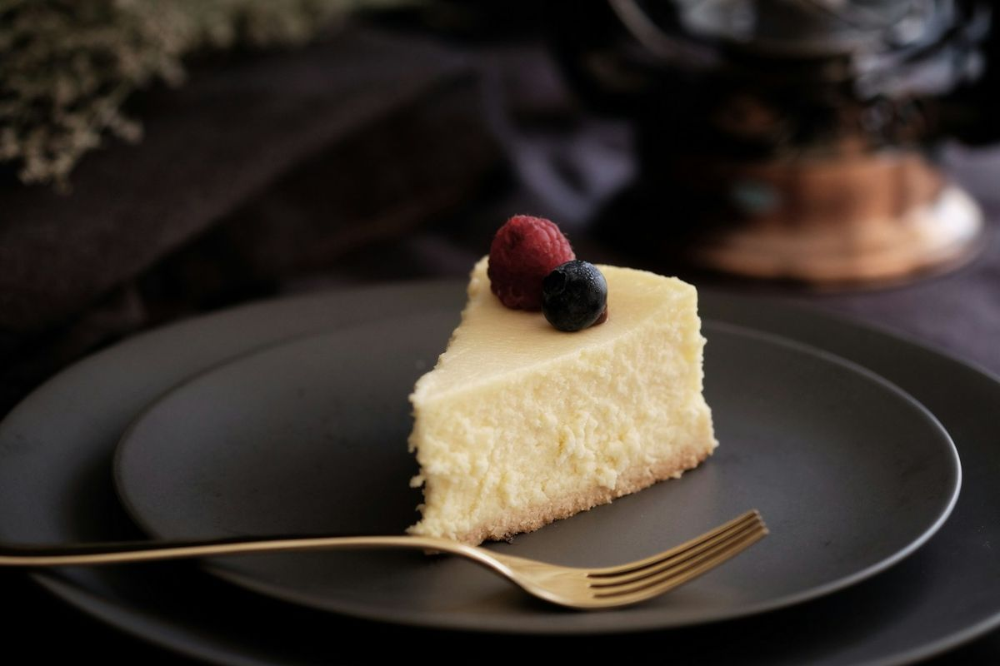
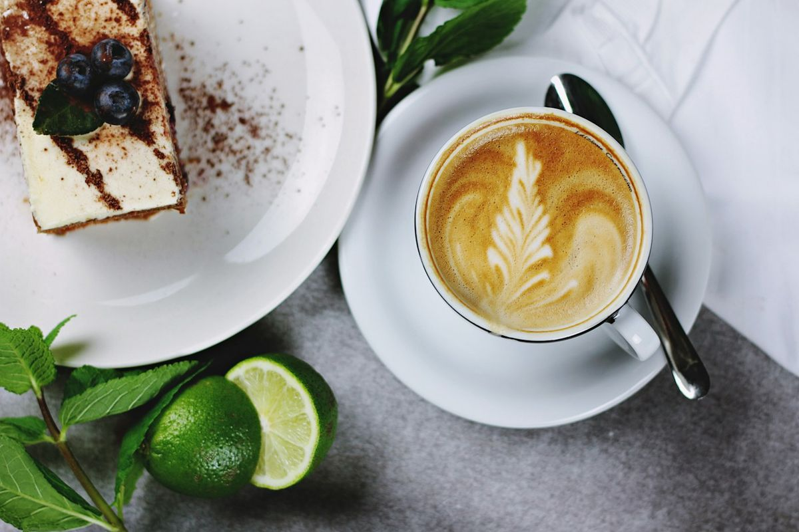
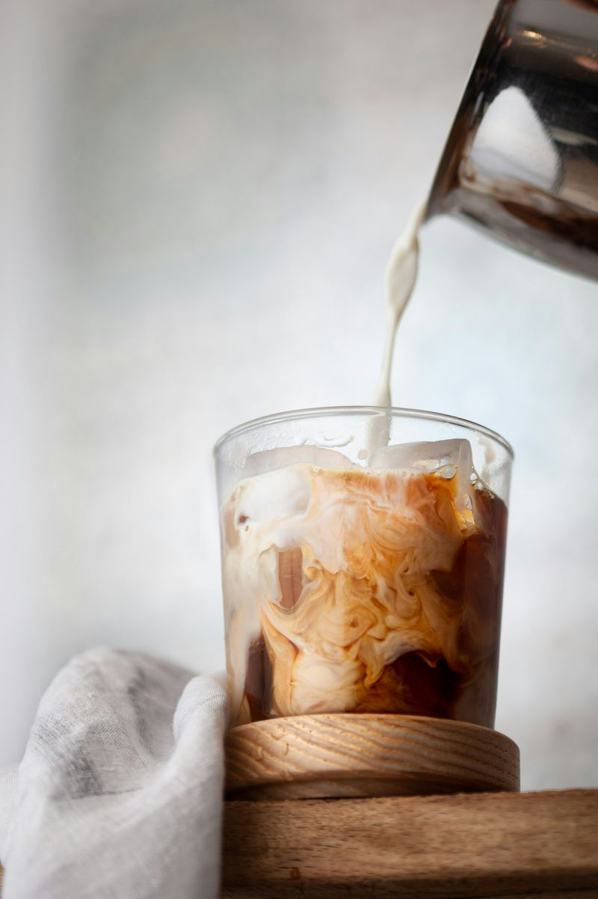
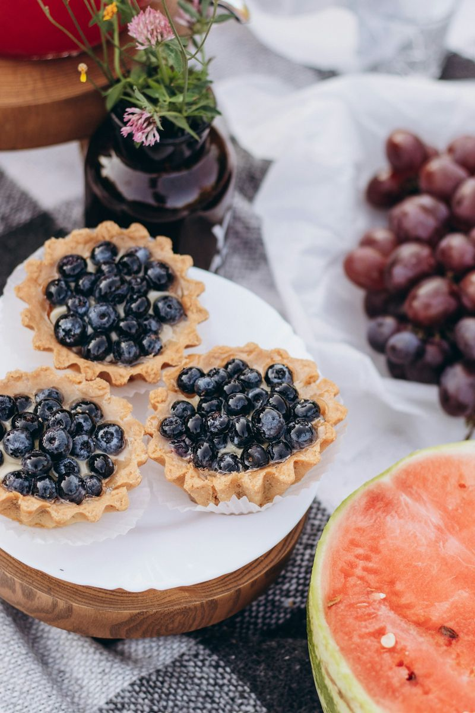
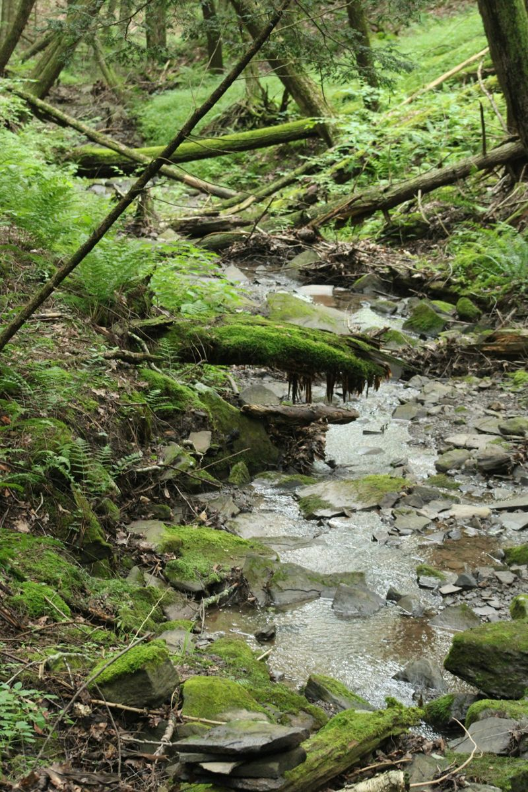
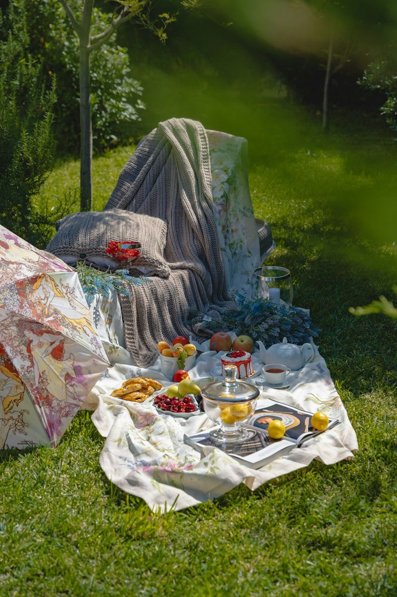
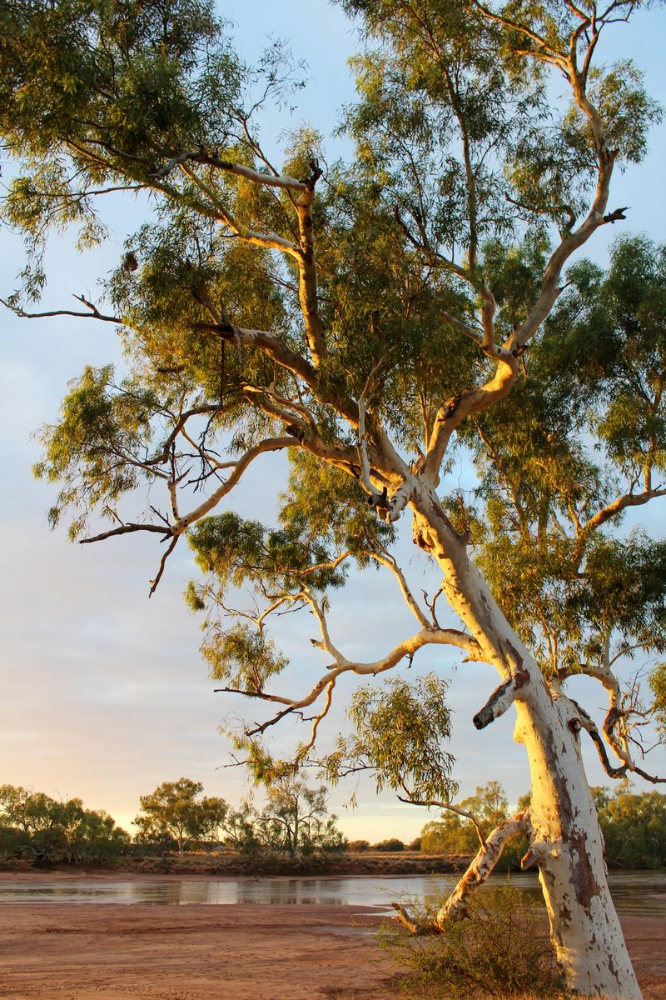

שלווה קפה
עגלת קפה על גדות הנחל
- בוקר
- קינוח
- נחל
- צל
- קפה
- שלווה
עגלת קפה כשרה · חורשת אלונים · על גדות הנחל · דקה מכביש 4
שלווה קפה
חורשת אלונים על גדות הנחל, דקה מכביש 4. עגלה אחת, כמה שולחנות עץ, ומגש שאפשר לקחת איתכם עד המים. באים, מזמינים, ומוצאים פינה.
והקינוחים.
קרם ברולה, עוגת גבינה, עוגת שוקולד. בקיץ נוחתים גם קינוחי הפירות – מנגו, דובדבן, בננה.
לוקחים אחד עם הקפה, ויורדים לנחל.


המגש הולך איתכם לנחל.




-
מזמינים בעגלה.
קפה, כריך, סלט, קינוח. מה שבא.
-
מקבלים מגש.
הכל בקערות קרפט. נוח לסחוב.
-
יוצאים לשביל.
שתי דקות הליכה בחורשה, והמים כבר נשמעים.
-
יושבים על המים.
שולחנות עץ ממש על הנחל. או מחצלת, איפה שבא.

טיול קצר בחורשה, ופיקניק על המים.
שביל מסומן שיוצא מהעגלה ומגיע עד הגדה, ובסוף ארוחה מול הזרימה. למשפחות, לזוגות, לימי הולדת ולחבורות קטנות.
פרטים: 052-000-0000 או בהודעה באינסטגרם.
מה כותבים עלינו בגוגל.
-
לקחנו מגש עד המים וישבנו שם שעה בלי לדבר. הקפה מצוין והמאפים יוצאים חמים.
-
עצרנו בדרך צפונה בלי לתכנן ונשארנו שעתיים. יוצאים בשביל הקטן ויש שם שולחן אחד בדיוק מול הזרימה — שווה להגיע מוקדם כדי לתפוס אותו.
-
מקום שקט לנקות את הראש אחרי העבודה. מוזיקה נעימה, לא רועשת.
-
הסלט היה טרי והקפה טוב. חבל שאין יותר מקומות ישיבה בצל ליד העגלה עצמה, בצהריים חם.
-
באנו עם שני ילדים קטנים והם רצו על הדשא בזמן שאכלנו. המחירים שפויים, המנות גדולות, והצוות סבלני גם כשיש תור. נחזור.
-
הכריך על הבאגט מעולה, והקינוחים הקטנים הפתיעו אותי לטובה. שירות חייכן.
-
עגלה שנראית קטנה מבחוץ ומוציאה אוכל ברמה של בית קפה. הפיצה מהתנור שווה את הנסיעה.
-
מקום מעולה לעצור באמצע הדרך
חניה ממש ליד
מומלץ בחום -
A great little stop in the middle of nowhere. The iced coffee and the cheesecake made our afternoon.
איפה ומתי.
- א׳–ה׳
- 8:30–22:00
- שישי
- 8:00–15:00
- שבת וחגים
- סגור
כשר. תפריט ערב בימי חול.
כביש 4, בכניסה לחורשת אלונים.
חמש דקות מכביש 6, דרום או צפון.